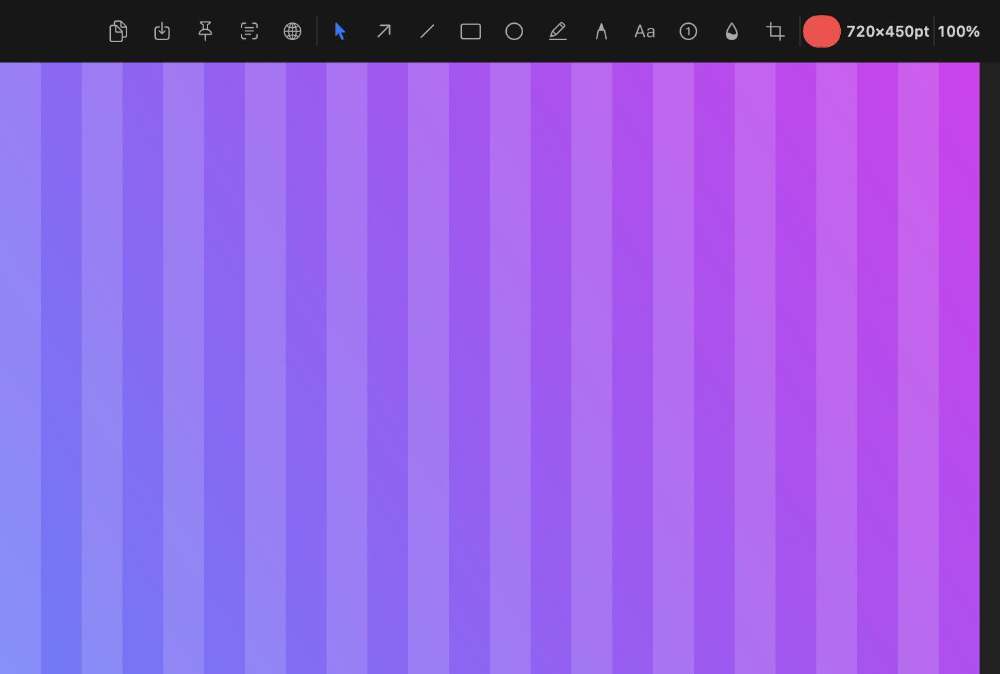
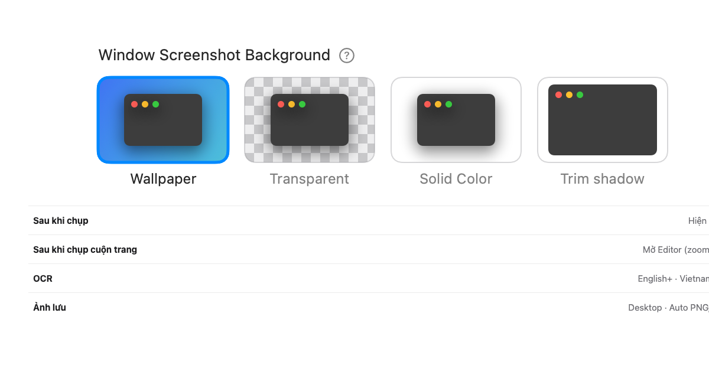
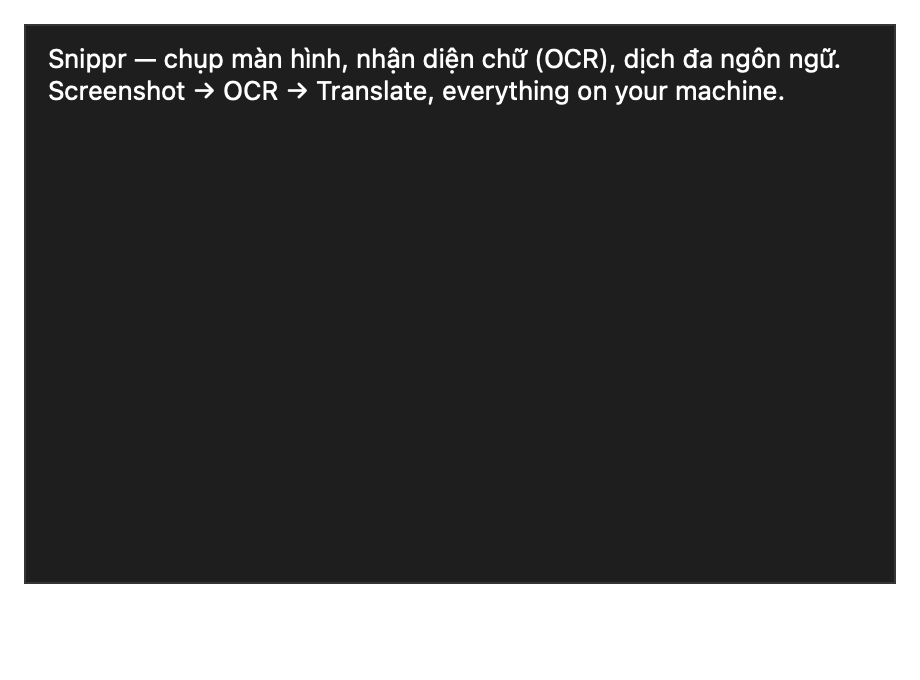

Chụp đủ kiểu
Toàn màn hình, kéo chọn vùng, cửa sổ, hẹn 3 giây, lặp lại vùng cũ. Sau khi chọn vùng, thanh công cụ hiện ngay trên ảnh — copy, lưu, ghim, OCR, dịch, hoặc mở Editor.
Cho Mac và Windows
Kéo chọn, chú thích ngay trên ảnh, copy. Cuộn trang dài rồi mở Editor để zoom. OCR tiếng Việt offline — không tài khoản, ảnh không lên mây.

Snippr sống trên menu bar hoặc khay hệ thống. Bấm phím tắt, chụp, đánh dấu, copy. Không wizard, không đăng nhập.
Toàn màn hình, kéo chọn vùng, cửa sổ, hẹn 3 giây, lặp lại vùng cũ. Sau khi chọn vùng, thanh công cụ hiện ngay trên ảnh — copy, lưu, ghim, OCR, dịch, hoặc mở Editor.
Bạn cuộn, Snippr ghép. Banner hay vùng chạy trên trang không làm nhân đôi đầu trang. Xong thì mở Editor để zoom và cắt.
Mũi tên, hình, bút, chữ, số thứ tự, làm mờ, cắt. Lăn chuột đổi nét, ⌘/Ctrl + lăn để zoom. App nhớ màu và độ dày vừa dùng.
OCR tiếng Việt và tiếng Anh chạy offline trên máy. Dịch chỉ gửi văn bản khi bạn bấm — không tự gửi ảnh.
Ghim ảnh nổi trên mọi cửa sổ. Phím tắt đổi được trong Cài đặt, trên cả hai hệ.
Không tài khoản, không phân tích, không đồng bộ đám mây. Chỉ phần Dịch gọi Google Translate khi bạn chủ động dùng.
Chụp cửa sổ
Wallpaper, trong suốt, màu đặc, hoặc cắt bóng. Cài đặt 1.2.8 cũng chọn việc sau khi chụp cuộn trang: mở Editor để zoom và cắt.

OCR & dịch
Quét vùng có chữ, copy ngay. Cần dịch thì chọn ngôn ngữ — Việt, Anh, Nhật, Hàn, Trung… Phần còn lại của ảnh không rời máy.

Editor 1.2.8, OCR tiếng Việt, và cài đặt nền cửa sổ.
Miễn phí. Chọn đúng máy của bạn. Không cần tạo tài khoản.
Apple Silicon · v1.2.8
Cho máy M1 trở lên. Kéo vào Applications là xong.
Tải DMGx86_64 · v1.2.8
Cho Mac dùng chip Intel. Cùng tính năng với bản Apple Silicon.
Tải DMG64-bit · v1.2.10
1.2.10 có màn duyệt ngay sau khi kéo vùng (toolbar, Backdrop, Magnifier, Spotlight, chỉnh crop), gợi ý phím tắt khi rê chuột, và che pixel thực sự che. Installer hoặc ZIP portable.
Tải SetupBản này chưa ký Authenticode. Nếu SmartScreen hỏi, đối chiếu SHA-256 trên GitHub rồi chọn More info → Run anyway. ZIP portable
Trên Mac, một lệnh là đủ. Trên Windows, chạy installer.
Mac — cài nhanh. Mở Terminal, dán lệnh, Enter. Script tự chọn bản Apple Silicon hoặc Intel, kiểm SHA-256 và chữ ký, rồi đặt app vào Applications.
curl -fsSL https://snippr.pages.dev/install.sh | sh
Bạn có thể đọc toàn bộ script tại install.sh.
SnipprSetup-1.2.10-win-x64.exe.Đổi được trong Cài đặt.
| Việc | Mac | Windows |
|---|---|---|
| Toàn màn hình | ⇧⌘1 | Ctrl+Shift+1 |
| Vùng chọn | ⇧⌘2 | Ctrl+Shift+2 |
| Cửa sổ đang mở | menu bar → More | Ctrl+Shift+4 |
| Quét chữ / QR | ⌃⌥⌘O hoặc nút trên ảnh | Nút OCR trên editor |
Trong editor: lăn đổi độ dày · ⌘/Ctrl + lăn zoom · ⌘/Ctrl + C copy và đóng · ⌘/Ctrl + S lưu · ⌘/Ctrl + Z hoàn tác · phím A R T B đổi công cụ.
Được. Tải nút Mac Intel. Bản Apple Silicon dành cho M1 trở lên.
Bản Mac dùng chữ ký Snippr ổn định để giữ quyền Ghi màn hình khi cập nhật, nhưng chưa notarize với Apple. Bản Windows 1.2.10 chưa ký Authenticode. Mã nguồn và SHA-256 công khai trên GitHub để bạn tự kiểm.
Mac: icon trên thanh menu → Cài đặt → Hotkeys, bấm ô rồi gõ tổ hợp mới. Windows: chuột phải icon khay → Settings, bấm ô hotkey rồi gõ tổ hợp (Esc để tắt phím đó).
Mặc định trên Desktop, đổi được trong Cài đặt. Auto chọn PNG cho giao diện, JPEG cho ảnh nhiều màu. Sau khi chụp cuộn trang, app mở Editor để zoom và cắt.
Không. Không tài khoản, không analytics. Ảnh không rời máy. Chỉ khi bạn bấm Dịch thì đoạn chữ đã quét mới được gửi đi để dịch.